Dear Baby,
Hello Baby, first of all praise God for this day because it's your birthday, so Happy 20th Birthday baby ko!! It just feels yesterday nung nag birthday ka na kausap moko and now it's been 3years already!! so tagal right? I hope na maging masaya ka sa birthday mo and I hope matuwa ka here and mag enjoy ka! I know you might feel lonely and sad during your birthday, but I'm here, I'm ready to celebrate it with you. I'm sorry if I can't give you anything aside from these little presents or birthday gifts but please do accept it, it really comes from my heart.
May you enjoy your birthday, I hope marami pang birthday mo ang magdaan na kasama ako at kasama mo akong nagcecelebrate. We've conquered many battles, arguments, discussion but we're still together, I want you to know na love na love parin kita from the bottom of my heart. My plans, goals, and wants are still the same which is for us to be happy together, not worrying about financial situation, busy schedules, or other responsibilities. I want for us to experience many happy things in life while enduring tough times together. I hope such day comes sooner but let's be patient for now, let's do first our priorities while checking each other always.
Finally, I wish na maging malalim pa pananampalataya mo at patuloy na maglingkod kay Lord. Let the Lord be the center of our relationship! Sending loves and warmest wishes, I Love youuuu.
With endless love,
Kael
 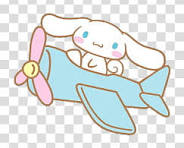
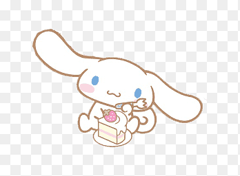
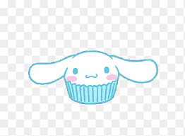
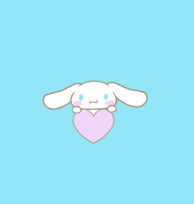
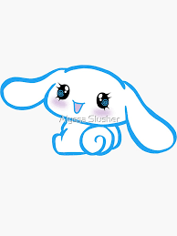
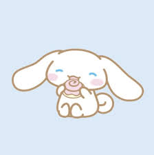
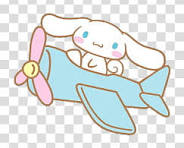
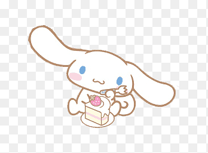
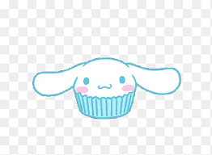
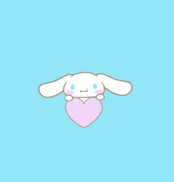
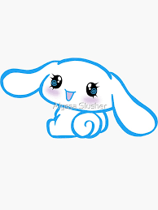
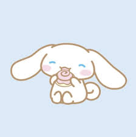